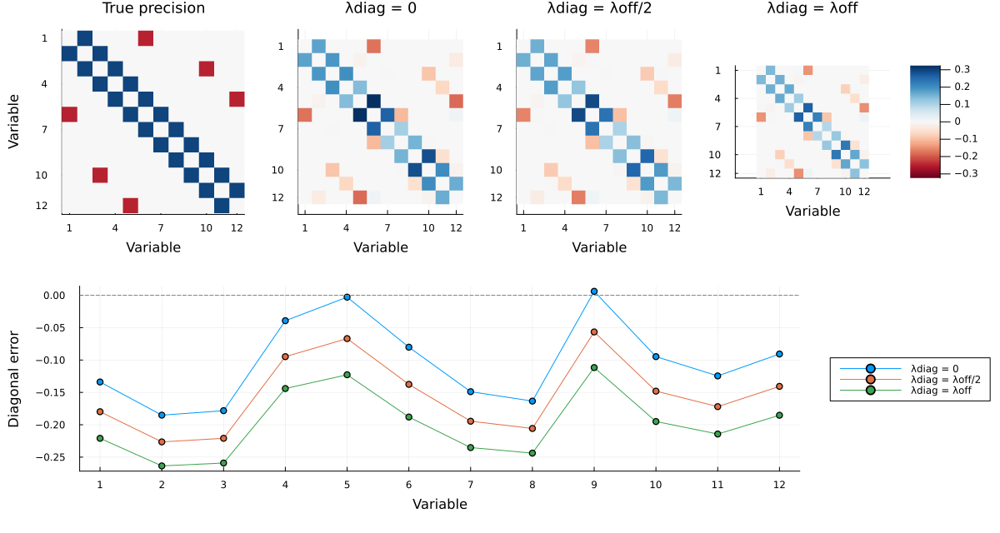

Graphical lasso
In a Gaussian vector x ~ N(0, Σ), two variables are independent given all the others when the corresponding entry of the precision matrix Θ = Σ⁻¹ is zero. A sparse estimate of Θ is therefore an estimate of the conditional-independence graph, and it is also a valid precision matrix when it is symmetric and positive definite. The graphical lasso (Friedman, Hastie and Tibshirani, 2008, doi:10.1093/biostatistics/kxm045) estimates Θ from a sample covariance matrix S by
\[\min_{\Theta=\Theta^\top\succ0}\; P(\Theta) = -\log\det\Theta+\operatorname{tr}(S\Theta) +\lambda_{\rm off}\sum_{i\ne j}|\Theta_{ij}|+\lambda_{\rm diag}\sum_i|\Theta_{ii}|.\]

The off-diagonal sum runs over the full matrix, so each undirected pair is penalized twice. Positive definiteness gives Θᵢᵢ > 0 for every i. The diagonal penalty equals λdiag * tr(Θ) and can change the scale and bias of the estimate. Its diagonal entries stay positive throughout the domain. For a direct ADMM fit, pass LogDetLoss(S) and NormL1(1.0, Λfull) with λoff off the diagonal and λdiag on it. An equivalent formulation absorbs the diagonal term into LogDetLoss(S + λdiag*I) and uses weights with zero diagonal. Supported problems and ADM-04 give the requirements for matrix ADMM.
Two related pages solve different problems. Neighborhood selection fits one lasso regression per variable; that page reports a graph and does not assemble a precision matrix, and separately fitted regressions need not combine into a symmetric positive-definite one. Covariance thresholding soft-thresholds the sample covariance; its zeros are zeros of the covariance, not of the precision matrix, and its estimate can be indefinite.
using LinearAlgebra, Random, ProximalBase, ProximalSolversA sparse precision matrix and a sample
The population precision matrix Θ_true has p = 12 variables, a chain 1 − 2 − ⋯ − 12 with entries 0.3 and three extra edges with entries −0.25. In each row the sum of the absolute values of the off-diagonal entries is at most 0.85, less than the diagonal 1, so Θ_true is strictly diagonally dominant and positive definite.
p, n = 12, 200
Θ_true = Matrix(1.0I, p, p)
for i in 1:p-1
Θ_true[i, i+1] = Θ_true[i+1, i] = 0.3
end
for (i, j) in ((1, 6), (3, 10), (5, 12))
Θ_true[i, j] = Θ_true[j, i] = -0.25
end
@assert maximum(sum(abs, Θ_true[i, :]) - Θ_true[i, i] for i in 1:p) <= 0.85 + 1e-12
@assert isposdef(Θ_true)With Σ_true = inv(Θ_true) = UᵀU from the Cholesky factor U, each row of randn(n, p) * U is zᵀU for a standard normal z, whose covariance is UᵀU = Σ_true. After centering the columns, S = XᵀX/n. The normalization 1/n is part of S, and LogDetLoss(S) has weight one.
Σ_true = inv(Θ_true)
U = cholesky(Symmetric(Σ_true)).U
@assert U' * U ≈ Σ_true
rng = Xoshiro(2026)
X = randn(rng, n, p) * U
X .-= sum(X; dims = 1) ./ n
S = Matrix(Symmetric(X' * X / n))
@assert S == S'The solve
Use λoff = 0.12 and compare λdiag = 0, λoff/2 and λoff. Each fit starts at its own identity matrix and uses the same fixed ADMM penalty parameter ρ = 1 and absolute and relative stopping tolerances of 1e-10. At each level the two routes use separate coefficient and dual buffers. The checks below use the original sample covariance and penalty.
function graphical_lasso_inputs(S::Matrix{T}, λoff::T, λdiag::T) where {T<:Union{Float32, Float64}}
isfinite(λoff) && λoff >= 0 || throw(ArgumentError("λoff must be finite and nonnegative"))
isfinite(λdiag) && λdiag >= 0 || throw(ArgumentError("λdiag must be finite and nonnegative"))
Sshift = copy(S)
Sshift[diagind(Sshift)] .+= λdiag
all(isfinite, Sshift) && issymmetric(Sshift) ||
throw(ArgumentError("S + λdiag*I must be finite and exactly symmetric"))
Λ = fill(λoff, size(S))
Λ[diagind(Λ)] .= zero(T)
return Sshift, Λ
end
λoff = 0.12
diagonal_weights = (0.0, λoff / 2, λoff)
options = ProximalOptions(maxiter = 5000)
method = ADMMSolver(ρ = 1.0, α = 1.0, adaptive = false, abstol = 1e-10, reltol = 1e-10)
fits = map(diagonal_weights) do λdiag
Sshift, Λ = graphical_lasso_inputs(S, λoff, λdiag)
Λfull = copy(Λ)
Λfull[diagind(Λfull)] .= λdiag
Θdirect = Matrix(1.0I, p, p)
direct = solve!(Θdirect, LogDetLoss(S), NormL1(1.0, Λfull), method, options)
Θ = Matrix(1.0I, p, p)
result = solve!(Θ, LogDetLoss(Sshift), NormL1(1.0, Λ), method, options)
return (; λdiag, Θ, Sshift, Λ, result, Θdirect, direct)
end((λdiag = 0.0, Θ = [0.8661151298283023 0.17409915124095288 … 0.0 0.0; 0.17409915124095288 0.8148380442640005 … 0.0 -0.027469894555679747; … ; 0.0 0.0 … 0.8754588835398616 0.16183246623206904; 0.0 -0.027469894555679747 … 0.16183246623206904 0.9093160964964289], Sshift = [1.279172512329611 -0.41217000468365816 … -0.06880204935761532 -0.08267510646420631; -0.41217000468365816 1.3696465462007317 … 0.021648793638236047 0.1694778261145213; … ; -0.06880204935761532 0.021648793638236047 … 1.2904206358864454 -0.3688140425575101; -0.08267510646420631 0.1694778261145213 … -0.3688140425575101 1.2046718000738297], Λ = [0.0 0.12 … 0.12 0.12; 0.12 0.0 … 0.12 0.12; … ; 0.12 0.12 … 0.0 0.12; 0.12 0.12 … 0.12 0.0], result = ADMM results (converged)
* Minimum: 1.416061e+01
* Iterations: 75 (150 proximal calls)
* Primal residual: 1.29e-09 (tolerance 1.53e-09)
* Dual residual: 1.79e-10 (tolerance 1.30e-09)
* Penalty: 1.000000e+00
, Θdirect = [0.8661151298283023 0.17409915124095288 … 0.0 0.0; 0.17409915124095288 0.8148380442640005 … 0.0 -0.027469894555679747; … ; 0.0 0.0 … 0.8754588835398616 0.16183246623206904; 0.0 -0.027469894555679747 … 0.16183246623206904 0.9093160964964289], direct = ADMM results (converged)
* Minimum: 1.416061e+01
* Iterations: 75 (150 proximal calls)
* Primal residual: 1.29e-09 (tolerance 1.53e-09)
* Dual residual: 1.79e-10 (tolerance 1.30e-09)
* Penalty: 1.000000e+00
), (λdiag = 0.06, Θ = [0.8201444254962319 0.1582792555441216 … 0.0 0.0; 0.1582792555441216 0.7735229610742229 … 0.0 -0.024942760793328828; … ; 0.0 0.0 … 0.8280001696907735 0.1465382712076354; 0.0 -0.024942760793328828 … 0.1465382712076354 0.8592817052763849], Sshift = [1.339172512329611 -0.41217000468365816 … -0.06880204935761532 -0.08267510646420631; -0.41217000468365816 1.4296465462007317 … 0.021648793638236047 0.1694778261145213; … ; -0.06880204935761532 0.021648793638236047 … 1.3504206358864455 -0.3688140425575101; -0.08267510646420631 0.1694778261145213 … -0.3688140425575101 1.2646718000738297], Λ = [0.0 0.12 … 0.12 0.12; 0.12 0.0 … 0.12 0.12; … ; 0.12 0.12 … 0.0 0.12; 0.12 0.12 … 0.12 0.0], result = ADMM results (converged)
* Minimum: 1.478784e+01
* Iterations: 79 (158 proximal calls)
* Primal residual: 1.25e-09 (tolerance 1.51e-09)
* Dual residual: 1.50e-10 (tolerance 1.30e-09)
* Penalty: 1.000000e+00
, Θdirect = [0.8201444254962305 0.1582792555440991 … 0.0 0.0; 0.1582792555440991 0.7735229610742034 … 0.0 -0.02494276079336885; … ; 0.0 0.0 … 0.828000169690787 0.1465382712077392; 0.0 -0.02494276079336885 … 0.1465382712077392 0.859281705276463], direct = ADMM results (converged)
* Minimum: 1.478784e+01
* Iterations: 79 (158 proximal calls)
* Primal residual: 1.25e-09 (tolerance 1.51e-09)
* Dual residual: 1.51e-10 (tolerance 1.31e-09)
* Penalty: 1.000000e+00
), (λdiag = 0.12, Θ = [0.7790290569769205 0.14455922947856975 … 0.0 0.0; 0.14455922947856975 0.7364123288614005 … 0.0 -0.0227616744531077; … ; 0.0 0.0 … 0.7856734326988847 0.13336976131476347; 0.0 -0.0227616744531077 … 0.13336976131476347 0.8146796249388037], Sshift = [1.3991725123296108 -0.41217000468365816 … -0.06880204935761532 -0.08267510646420631; -0.41217000468365816 1.4896465462007318 … 0.021648793638236047 0.1694778261145213; … ; -0.06880204935761532 0.021648793638236047 … 1.4104206358864455 -0.3688140425575101; -0.08267510646420631 0.1694778261145213 … -0.3688140425575101 1.3246718000738298], Λ = [0.0 0.12 … 0.12 0.12; 0.12 0.0 … 0.12 0.12; … ; 0.12 0.12 … 0.0 0.12; 0.12 0.12 … 0.12 0.0], result = ADMM results (converged)
* Minimum: 1.538068e+01
* Iterations: 83 (166 proximal calls)
* Primal residual: 1.28e-09 (tolerance 1.49e-09)
* Dual residual: 1.35e-10 (tolerance 1.30e-09)
* Penalty: 1.000000e+00
, Θdirect = [0.7790290569769195 0.14455922947855093 … 0.0 0.0; 0.14455922947855093 0.7364123288613845 … 0.0 -0.022761674453134623; … ; 0.0 0.0 … 0.785673432698896 0.13336976131486433; 0.0 -0.022761674453134623 … 0.13336976131486433 0.8146796249388715], direct = ADMM results (converged)
* Minimum: 1.538068e+01
* Iterations: 83 (166 proximal calls)
* Primal residual: 1.28e-09 (tolerance 1.49e-09)
* Dual residual: 1.35e-10 (tolerance 1.31e-09)
* Penalty: 1.000000e+00
))Check the estimate independently
Evaluate the two objectives from the stored data. The original calculation uses S and the two absolute-entry sums. The shifted calculation uses Sshift and the zero-diagonal weight matrix. The comparison allows for rounding, including the addition on the covariance diagonal.
function check_objectives(Θ, factor, S, λoff, λdiag, Sshift, Λ, minimum)
p = size(Θ, 1)
ld = logdet(factor)
off_penalty = λoff * sum((abs(Θ[i, j]) for i in 1:p, j in 1:p if i != j); init = zero(eltype(Θ)))
diag_penalty = λdiag * sum(abs, diag(Θ))
trace_original = dot(S, Θ)
trace_shifted = dot(Sshift, Θ)
shifted_penalty = sum(Λ .* abs.(Θ))
original = -ld + trace_original + off_penalty + diag_penalty
shifted = -ld + trace_shifted + shifted_penalty
@assert all(isfinite, (original, shifted, minimum))
scale = 1 + abs(ld) + abs(trace_original) + off_penalty + diag_penalty
tol = 32p * eps(eltype(Θ)) * scale
@assert abs(original - shifted) <= tol
@assert abs(original - minimum) <= tol && abs(shifted - minimum) <= tol
return original, shifted
endcheck_objectives (generic function with 1 method)Set G = S - inv(Θ). The KKT violation is |Gᵢᵢ + λdiag| on the diagonal, |Gᵢⱼ + λoff*sign(Θᵢⱼ)| at a nonzero off-diagonal entry, and max(|Gᵢⱼ| - λoff, 0) at an exact off-diagonal zero. Divide the maximum by max(1, maximum(abs, S), λoff, λdiag). The check uses its own accuracy bound.
function original_kkt(Θ, S, λoff, λdiag)
G = S - inv(Θ)
p = size(Θ, 1)
violation = maximum(Iterators.product(1:p, 1:p)) do (i, j)
if i == j
abs(G[i, i] + λdiag)
elseif iszero(Θ[i, j])
max(abs(G[i, j]) - λoff, 0)
else
abs(G[i, j] + λoff * sign(Θ[i, j]))
end
end
return violation / max(1, maximum(abs, S), λoff, λdiag)
endoriginal_kkt (generic function with 1 method)The dual maximizes logdet(W) + p over symmetric positive-definite W with Wᵢᵢ = Sᵢᵢ + λdiag and |Wᵢⱼ - Sᵢⱼ| ≤ λoff off the diagonal. Start from the fitted inverse and clip its off-diagonal deviations from S to this box. Use BigFloat for the candidate so that the fixed diagonal can retain the sum of the two stored Float64 values. Verify the diagonal and the box exactly on the stored values using rational arithmetic. After a successful BigFloat Cholesky test, weak duality gives a numerical gap estimate. The Cholesky test and value evaluation use rounded arithmetic.
function dual_value(Θ, S, λoff, λdiag)
p = size(S, 1)
Sb, off, diagonal = BigFloat.(S), BigFloat(λoff), BigFloat(λdiag)
inverse = inv(BigFloat.(Θ))
W = copy(Sb)
W[diagind(W)] .+= diagonal
for j in 2:p, i in 1:j-1
W[i, j] = W[j, i] = Sb[i, j] + clamp(inverse[i, j] - Sb[i, j], -off, off)
end
exact(x) = Rational{BigInt}(x)
in_box = all(exact(W[i, i]) == exact(S[i, i]) + exact(λdiag) for i in 1:p) &&
all(abs(exact(W[i, j]) - exact(S[i, j])) <= exact(λoff) for j in 2:p for i in 1:j-1)
in_box || return nothing
factor = cholesky(Symmetric(W); check = false)
return issuccess(factor) ? Float64(logdet(factor) + p) : nothing
enddual_value (generic function with 1 method)At each returned point, check positive definiteness, the original objective, original KKT conditions and dual feasibility. Compare the two routes at the same diagonal weight. Forming the effective weight and adding it to the covariance can round in working precision.
function check_fit(Θ, result, S, λoff, λdiag, Sshift, Λ)
@assert result.converged && result.minimizer === Θ
@assert result.r_norm <= result.eps_pri && result.s_norm <= result.eps_dual
@assert all(isfinite, Θ) && issymmetric(Θ)
factor = cholesky(Symmetric(Θ))
smallest_eigenvalue = eigmin(Symmetric(Θ))
@assert smallest_eigenvalue > 0
original, shifted = check_objectives(Θ, factor, S, λoff, λdiag, Sshift, Λ, result.minimum)
kkt = original_kkt(Θ, S, λoff, λdiag)
@assert kkt <= 1e-8
dual = dual_value(Θ, S, λoff, λdiag)
gap = isnothing(dual) ? nothing : original - dual
isnothing(gap) || @assert -1e-10 <= gap <= 1e-8
return (; original, shifted, kkt, dual, gap, smallest_eigenvalue)
endcheck_fit (generic function with 1 method)Compare with the true graph
An edge is an unordered pair i < j with an exact nonzero entry. We also compare the diagonals and the full precision matrices with their population values. The diagonal error is the Euclidean norm of the difference and the diagonal bias shown for each variable is its signed estimation error on this sample. The unpenalized diagonal fit retains the original sample's checks on edge recovery, sparsity and Frobenius error.
edge_pairs = [(i, j) for j in 2:p for i in 1:j-1]
true_edges = count(e -> !iszero(Θ_true[e...]), edge_pairs)
@assert true_edges == 14
for fit in fits
(; λdiag, Θ, Sshift, Λ, result, Θdirect, direct) = fit
direct_check = check_fit(Θdirect, direct, S, λoff, λdiag, Sshift, Λ)
shifted_check = check_fit(Θ, result, S, λoff, λdiag, Sshift, Λ)
solution_difference = maximum(abs, Θdirect - Θ)
objective_difference = abs(direct_check.original - shifted_check.original)
@assert solution_difference <= 1e-8
@assert objective_difference <= 1e-8 * max(1, abs(direct_check.original))
println((; λdiag, solution_difference, objective_difference))
for (route, point, solved, check) in ((:direct, Θdirect, direct, direct_check), (:shifted, Θ, result, shifted_check))
diagonal_error = norm(diag(point) - diag(Θ_true))
frobenius_error = norm(point - Θ_true)
estimated_edges = count(e -> !iszero(point[e...]), edge_pairs)
tp = count(e -> !iszero(Θ_true[e...]) && !iszero(point[e...]), edge_pairs)
println((; λdiag, route, status = solved.status, iterations = solved.iterations,
original_objective = check.original, shifted_objective = check.shifted, solver_objective = solved.minimum,
max_kkt_violation = check.kkt, check.smallest_eigenvalue, diagonal_error, frobenius_error,
estimated_edges, true_positives = tp, false_positives = estimated_edges - tp,
false_negatives = true_edges - tp, dual_objective = something(check.dual, "not certified"),
duality_gap_estimate = something(check.gap, "not certified")))
if iszero(λdiag)
@assert tp >= 10 && estimated_edges < length(edge_pairs)
@assert frobenius_error <= norm(Θ_true) / 2
end
end
end(λdiag = 0.0, solution_difference = 0.0, objective_difference = 0.0)
(λdiag = 0.0, route = :direct, status = :converged, iterations = 75, original_objective = 14.160606943764504, shifted_objective = 14.160606943764504, solver_objective = 14.160606943764504, max_kkt_violation = 3.3379814111977405e-10, smallest_eigenvalue = 0.3909719353585013, diagonal_error = 0.41664247464644794, frobenius_error = 0.7644976459858615, estimated_edges = 25, true_positives = 14, false_positives = 11, false_negatives = 0, dual_objective = 14.160606943367949, duality_gap_estimate = 3.965556771845513e-10)
(λdiag = 0.0, route = :shifted, status = :converged, iterations = 75, original_objective = 14.160606943764504, shifted_objective = 14.160606943764504, solver_objective = 14.160606943764504, max_kkt_violation = 3.3379814111977405e-10, smallest_eigenvalue = 0.3909719353585013, diagonal_error = 0.41664247464644794, frobenius_error = 0.7644976459858615, estimated_edges = 25, true_positives = 14, false_positives = 11, false_negatives = 0, dual_objective = 14.160606943367949, duality_gap_estimate = 3.965556771845513e-10)
(λdiag = 0.06, solution_difference = 2.1249668691325496e-13, objective_difference = 1.7763568394002505e-15)
(λdiag = 0.06, route = :direct, status = :converged, iterations = 79, original_objective = 14.787836762325519, shifted_objective = 14.78783676232552, solver_objective = 14.787836762325519, max_kkt_violation = 3.276141139508078e-10, smallest_eigenvalue = 0.3830705993879532, diagonal_error = 0.5652720605294277, frobenius_error = 0.9024288285424952, estimated_edges = 26, true_positives = 14, false_positives = 12, false_negatives = 0, dual_objective = 14.787836761977733, duality_gap_estimate = 3.4778580015881744e-10)
(λdiag = 0.06, route = :shifted, status = :converged, iterations = 79, original_objective = 14.787836762325517, shifted_objective = 14.78783676232552, solver_objective = 14.78783676232552, max_kkt_violation = 3.2729260370222397e-10, smallest_eigenvalue = 0.38307059938795984, diagonal_error = 0.5652720605294203, frobenius_error = 0.902428828542496, estimated_edges = 26, true_positives = 14, false_positives = 12, false_negatives = 0, dual_objective = 14.787836761978085, duality_gap_estimate = 3.474323051477768e-10)
(λdiag = 0.12, solution_difference = 2.0292101332586299e-13, objective_difference = 1.7763568394002505e-15)
(λdiag = 0.12, route = :direct, status = :converged, iterations = 83, original_objective = 15.380678177227061, shifted_objective = 15.380678177227061, solver_objective = 15.38067817722706, max_kkt_violation = 3.394297946213251e-10, smallest_eigenvalue = 0.37529407370073753, diagonal_error = 0.7086787838748652, frobenius_error = 1.0421281845034953, estimated_edges = 26, true_positives = 14, false_positives = 12, false_negatives = 0, dual_objective = 15.380678176896984, duality_gap_estimate = 3.3007729882683634e-10)
(λdiag = 0.12, route = :shifted, status = :converged, iterations = 83, original_objective = 15.380678177227063, shifted_objective = 15.380678177227061, solver_objective = 15.380678177227061, max_kkt_violation = 3.3909993858440496e-10, smallest_eigenvalue = 0.37529407370075274, diagonal_error = 0.7086787838748678, frobenius_error = 1.042128184503516, estimated_edges = 26, true_positives = 14, false_positives = 12, false_negatives = 0, dual_objective = 15.380678176897325, duality_gap_estimate = 3.297380146705109e-10)Reading the figure
The four heatmaps share one symmetric color scale. Their diagonals are displayed as zero to show the off-diagonal structure. The lower panel shows the signed error in each diagonal entry, with zero denoting the true value.
using Plots
labels = ("λdiag = 0", "λdiag = λoff/2", "λdiag = λoff")
shown = [copy(Θ) for Θ in (Θ_true, (fit.Θ for fit in fits)...)]
for matrix in shown
matrix[diagind(matrix)] .= 0.0
end
limit = maximum(maximum(abs, matrix) for matrix in shown)
ticks = [1, 4, 7, 10, 12]
panels = [heatmap(1:p, 1:p, matrix; title, color = :RdBu, clims = (-limit, limit),
colorbar = i == length(shown), aspect_ratio = 1, yflip = true, xlabel = "Variable",
ylabel = i == 1 ? "Variable" : "", xticks = ticks, yticks = ticks)
for (i, (title, matrix)) in enumerate(zip(("True precision", labels...), shown))]
errors = hcat((diag(fit.Θ) - diag(Θ_true) for fit in fits)...)
bias = plot(1:p, errors; label = reshape(collect(labels), 1, :), marker = :circle, xlabel = "Variable",
ylabel = "Diagonal error", xticks = 1:p, legend = :outerright)
hline!(bias, [0.0]; label = "", linestyle = :dash, color = :gray)
figure = plot(panels..., bias; layout = @layout([a b c d{0.34w}; e]), size = (1200, 640),
titlefontsize = 12, left_margin = 4Plots.mm, bottom_margin = 4Plots.mm)
savefig(figure, "graphical_lasso.svg")
nothingWhat we learned
Changing the diagonal penalty changes the objective. Compare the fitted errors and edge counts for this one sample at fixed λoff. The residual tests behind the solver's convergence flag and the independently computed KKT violation describe different quantities. A numerical duality gap is reported when the dual candidate passes both the exact affine constraints and the BigFloat Cholesky test.
The figure is generated from this script during the documentation build. Run the script alone for the same seeded calculations and checks without loading Plots.